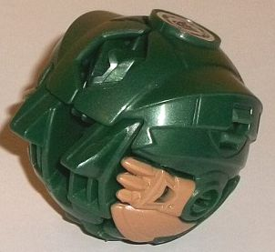
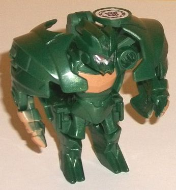
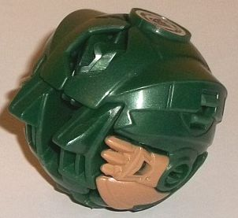
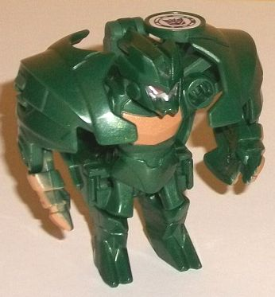
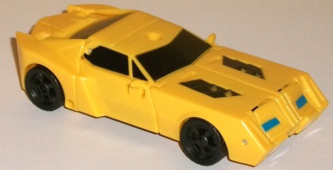
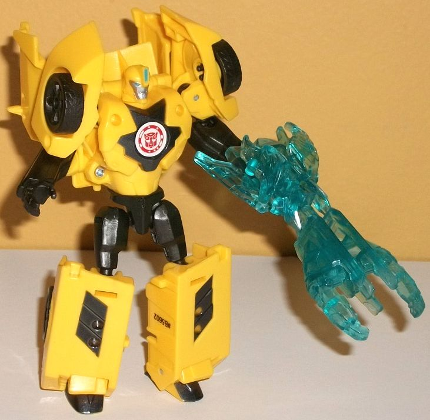
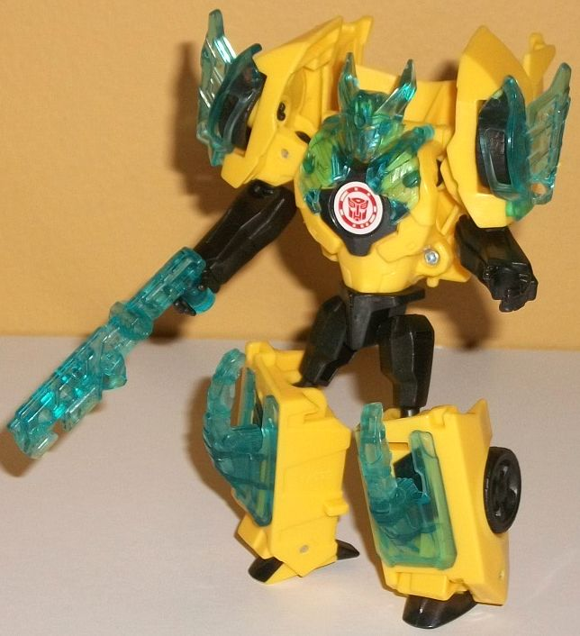

 
Allegiance : Decepticon
Size : Mini-Con
Difficulty of Transformation : Very Easy
Color Scheme : Dark milky military green, light brown, and some silver and pale metallic red
Individual Rating : 6.3
 Major
Mayhem
Major
Mayhem


Allegiance
: Decepticon
Size
: Mini-Con
Difficulty of Transformation
: Very
Easy
Color Scheme
: Dark milky military
green, light brown, and some silver and pale metallic red
Individual Rating
: 6.3
Major Mayhem's another
ball Mini-Con, and like most ball Mini-Cons he's a Decepticon. In ball
mode, he's mostly solid, with him being fairly round overall with relatively
little mold detailing for a Mini-Con. He's got some armor plating details
that are curved so that they don't bust out of the general round ball form,
but Major Mayhem's not
completely
round-- there's some "shoulder-pad-like"
details that stick out of the top that make him from being a completely
360-round ball. Still, even with these curved details, they end in rather
angular points, so that's an interesting contrast stylistically. Some of
the robot bits, unfortunately, are fairly obvious-- the tips of the robot
feet are the most blatant, just sticking out there and keeping Major Mayhem
from rolling much. He's also got claw-like details on the lower front quarters
of the toy, which normally wouldn't stick out too much except for the fact
that they're both painted a light brown, which kinda highlights the fact
that they're for a different mode. That said, the brown paint and dark
milky miltary green plastic used for the rest of the mode gives Major Mayhem
a very... well... military feel, which of course fits his name. They contrast
against each other quite nicely. Finally, as one last piece of kinda-kibble
there's oddly a cavity on the top front of this mode that lets the top
of Major Mayhem's head poke out. Kind of a weird decision, I'm not sure
why they didn't cover that up better-- there's nothing in Major Mayhem's
transformation that would prevent something like that.
To transform Major Mayhem,
you take the legs and fold them down, which causes the head to move forward
a bit as the shoulders splay out to the side. You also then fold down a
little lizard-like tail on the back end-- it's a totally unnecessary detail,
but helps make him a bit more unique, and the green coloration of the toy
works such a tail. The overall look of the robot mode is similar to
Undertone's
,
as he's got big, bulky shoulders, relatively small lower arms, and a somewhat
"deformed" body, with relatively small legs, body, and feet. The mold detailing
on the legs is angular and kind of a cross between looking like armor and
being reptilian, what with the two-toed claw feet. The body is fairly nondescript,
with some generic curved detailing and a colored (brown) bar across the
chest like a lot of RID2015 figures. There's some minor ball kibble behind
his body, but given the size it doesn't stick out that much. The shoulders
are generally good and give him a bit of a "tough guy" personality, but
putting the Decepticon emblem on the middle of the area that splits apart
means that his shoulders are asymmetrical; having the round Decepticon
emblem above part of his head on one side but not on the other looks kinda
off. This is also odd since Major Mayhem's head can rotate up and back,
but at a point near the back of his hunched neck-- some kind of abandoned
part of his transformation? It's pretty weird. Anyways, the head design
itself is quite mischevious, with some spiky headcrests and large toothy-jaw
like details below his silver face and light red eyes. Regarding the lower
arms-- I like the claw details that make him look more beastly again, but
they are only painted on the outside of the arm, not the inside, which
makes those parts look only half-finished in this mode-- I wish a bit more
tan paint had been added to the toy. For articulation in this mode, Major
Mayhem can move forward-and-back a bit at the elbows, and his tail can
move up-and-down. (His aforementioned rear-neck articulation doesn't have
any purpose in terms of poseability.)
 Bumblebee
Bumblebee



Allegiance
: Autobot
Difficulty of Transformation
: Easy
Color Scheme
: Yellow, black, transparent
aquamarine, and some metallic black and moderately light blue
Individual Rating
: 8.5
By this point, I'd imagine
you're pretty well-acquainted with RID2015 Bumblebee's vehicle mode; this
version isn't that different, in most respects. The proportions are pretty
much spot-on, and there's no robot mode extras whatsoever-- always a big
plus. Bumblebee has his usual yellow-and-black color scheme, with black
paint on the windows (including the rear one!), the diagonal bits on his
front hood, and some fairly light blue paint on the headlights. Unfortunately,
that's it as far as paint apps, and although Bumblebee's mold detailing
is fairly sparse as befits both a sportscar and a RID2015 toy, there's
still areas that really need some paint, such as the taillights and bumper
details on the back end; the grill and other headlight details on the front;
and, of course, the stripes, because Bumblebee just ain't Bumblebee anymore
without stripes, folks. Because of the armor-up gimmick and all, there
are also more pegs and holes and the like that do detract from the look
of this mode some. The rectangular pegs on the front hood are rather unsightly,
and because of the transformation, the hinge near the back end and the
little circular peg-like details on the car doors (due to how they rotate
for transformation) are also minor eyesores.
Bumblebee's transformation
to robot mode is MOSTLY the same as his
Warrior-class
version
, with the front end becoming the legs and most of the car bits
going on the back while his main body is revealed as part of the car main
body; meanwhile, the side back ends form the shoulders and the arms are
juust inside the car doors. A big difference here is that the windows from
the legs on the Warrior class toy have been moved onto a backpack; the
car doors rotate around with them. This has the net effect of having his
legs look better than the Warrior class version's, but 'Bee's now got a
bigger backpack. The rear car section also doesn't fold back behind his
head well enough and sticks up some. Otherwise, he looks great in this
mode; well-proportioned arms, nice legs (though the lower legs could stand
to be a bit smaller), and decent (black-painted) feet with heels this time.
The chest details are definitely different this time around, with them
being a bit more simplistic, looking less like a compressed car front and
instead there's just a black arrow-like detail around an otherwise sparsely-detailed,
fairly round chest. The head unfortunately is a bit small proportionally,
likely because of his armor gimmick. Otherwise it looks good, with a round
head with a vent on the forehead and an otherwise regular face with silver
paint and light blue paint on the eyes and forehead vent. For articulation
in this mode, Bumblebee can move at the neck, shoulders (at two points),
elbows, waist rotation, hips, knees, and back-and-forward a bit at the
ankles. Given that many of these joints are ball joints, this means he's
quite poseable.
As with the other Mini-Con
Battle Packs, Bumblebee comes with armor bits instead of the Mini-Con.
He's got a rifle; a really intricately-designed and honestly quite wicked-looking
spiky helmet piece with a bit of armor on the top of his chest; similiar
spiky bits that go on his shoulders; and two square bits that go on his
lower legs, each with a massive spike coming out of them. All of his bits
are a transparent aquamarine, which contrasts extremely well with the yellow
and helps make his color scheme a bit more varied and interesting. So,
all together, he looks quite mean and ready to impale and shoot some Decepticons--
the helmet in particular really adds to this mode. The armor pieces can
also form a weapon; the rifle forms the core, the leg bits form a sort
of large "disc launcher barrel", the shoulder bits form wings to the back
of the weapon, and the helmet piece sort of connects the parts together.
All in all it's a very solid, mean-looking weapon-- the best out of this
subline, if you ask me-- and there's a hole on the roof of the vehicle
mode for him to wield it there to boot! So nothing to complain about here.
Yeah, I know it's "another
Bumblebee toy", but this is one of the best RID2015 'Bee toys there is,
especially if you want an added gimmick beyond your basic transformation.
The core toy itself shares most of the positives of the Warrior class toy
at a bit smaller of a scale, with better legs but with a larger backpack
and more visible pegs and hinges in vehicle mode. The armor/weapon pieces
are VERY cool and add a lot to the figure, and Major Mayhem-- while not
the best Mini-Con-- certainly isn't the worst either, and has a very unique
look. Recommended.
Reviews by Beastbot